Ta strona została przetłumaczona automatycznie. Jeśli coś brzmi nie tak, daj mi znać.
Darmowe porady technologiczne dla Bridlington i East Riding of Yorkshire
Proste porady dotyczące telefonów, komputerów i bezpieczeństwa w internecie. Darmowe, bez żadnych zobowiązań.
Najnowsze wskazówki

Show your phone’s photos on the TV
Here’s a lovely way to share photos with visitors: put them on the TV.

Join a Video Meeting from a Link
More doctors, clubs and families use video calls now. If you're sent a link to join one, here's what to do. Zoom, Teams and Google Meet all work the...

Is that Black Friday deal really a deal?
Black Friday is tomorrow. Many “deals” aren’t as good as they look, so here’s how to check.
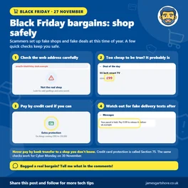
Black Friday Shopping Safety
Black Friday is on 27 November, with Cyber Monday on the 30th. There are real bargains about, but scammers also set up fake shops and fake deals at...

Check Your Mobile Data
Your phone plan gives you a set amount of mobile data each month. Here's how to check how much you've used, so you don't go over and get charged extra.

Bright Sky: free, private help with domestic abuse
Today is the UN’s International Day for the Elimination of Violence against Women. I wanted to share a free app that could quietly help someone.

Share Your Location with Family
Out walking or driving on your own? You can share your location with someone you trust, so they can check you're OK.
Tracker Alerts
Today marks the start of the 16 Days of Activism against gender-based violence, so I wanted to share a phone safety feature that could really help someone.

Delete Apps You Never Use
Got apps on your phone you never use? Deleting them frees up space, cuts down on alerts and makes your home screen easier to use.

Is your Google account safe? Run a free check
Here’s a free 5-minute check that makes your Google and Gmail account safer.

Over State Pension age? Check for Pension Credit
If you or someone you know has reached State Pension age, it’s worth checking for Pension Credit.

Unsubscribe from emails in one tap
Is your inbox full of marketing emails? Gmail can stop them in a few taps.

Download a map before you go
Going somewhere with poor signal? Google Maps can work with no signal at all, if you save the area first.

Update All Your Apps
App updates fix problems and close the gaps that scammers use. You can update all your apps with one tap.

Lost your Android phone? Find it from any computer
Lost your Android phone? You can find it from any computer or tablet, even a friend’s.

Free Up Phone Space
Has your phone said its storage is full? Here's how to clear out what you don't need, without losing what you love.

Old cables and gadgets? Don’t bin them
It’s the European Week for Waste Reduction. Most of us have a drawer of old cables, chargers and phones, and they shouldn’t go in the bin.

Quiet Nights Do Not Disturb
Does your phone beep at night? Do Not Disturb keeps it quiet while you sleep, but you can still let family get through.
Marketplace Scams
With Black Friday and Christmas shopping coming up, I wanted to share some tips for buying and selling safely on Facebook Marketplace and similar sites.

Get more from your TV
It’s World Television Day, so here are a few ways to get more from your TV.

W wieku od 40 do 74 lat? Skorzystaj z bezpłatnego badania zdrowia NHS
Z okazji Międzynarodowego Dnia Mężczyzn w tym tygodniu, przypominamy o bezpłatnym badaniu dla wszystkich osób w wieku od 40 do 74 lat w Anglii.
Fałszywe reklamy i sklepy
Z uwagi na nadchodzące zakupy z okazji Black Friday i Bożego Narodzenia, chciałem przekazać ostrzeżenie przed fałszywymi reklamami i sklepami internetowymi.

Zatrzymaj irytujące powiadomienia z aplikacji
Czy aplikacja sklepowa lub gra piszczy do Państwa przez cały dzień? Oto jak wyłączyć jej powiadomienia w Androidzie i iPhone'ie. Bezpłatna lokalna pomoc, Bridlington & Driffield.

Opieka nad kimś? Bezpłatna pomoc dla opiekunów
Dzisiaj jest Dzień Praw Opiekunów. Jeśli pomagasz członkowi rodziny lub przyjacielowi, który nie poradziłby sobie bez Ciebie, jesteś opiekunem, nawet jeśli nigdy nie nazywałeś siebie w ten sposób.

Napisy na żywo
Problemy ze słuchem? Oto jak włączyć napisy na żywo w telefonie z systemem Android, aby móc czytać to, co jest mówione w filmach.

Znajdź publiczną toaletę w pobliżu na swoim telefonie
Znajdź toaletę publiczną w pobliżu, na swoim telefonie, za pomocą bezpłatnej strony internetowej. Przydatne podczas wycieczek. Bezpłatna lokalna pomoc, Bridlington & Driffield.
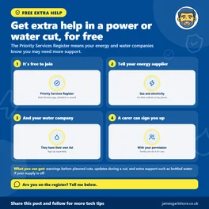
Get extra help in a power or water cut, for free
Did you know there’s a free list that tells your energy and water companies you may need extra help? It’s called the Priority Services Register.

Phone Reads Text Aloud
Did you know your phone can read things out loud to you? Great for long messages, or when your eyes are tired.

Worried someone you know is being scammed?
It’s Safeguarding Adults Week. Scammers often target people who live alone, and they can be very convincing. Here’s how to help someone you’re worried...

Lupa w telefonie
Zostawili Państwo okulary w innym pokoju? Aparat w telefonie działa jak świetna lupa, która pomoże przeczytać mały druk na pudełkach leków, w menu czy rachunkach.

Przerwa w dostawie prądu? Zadzwoń pod 105
Przerwa w dostawie prądu? Zadzwoń pod numer 105 – bezpłatnie, 24 godziny na dobę, w Anglii, Szkocji i Walii. Oto co należy zrobić i co przygotować przed zimą.

Zatrzymaj się. Pomyśl. Sprawdź. Dopiero wtedy działaj.
Trwa Międzynarodowy Tydzień Świadomości Dotyczącej Oszustw. Oszuści polegają na pośpiechu, dlatego kilka sekund zastanowienia to Państwa najlepsza ochrona.

Tydzień przeciwko nękaniu
Trwa Tydzień Przeciwdziałania Przemocy (Anti-Bullying Week), a tegoroczny temat to „Przełam milczenie”. Jeśli dziecko lub wnuk jest nękany w sieci, oto jak może Pan/Pani pomóc.

Wyłącz autokorektę
Czy Twój telefon ciągle zmienia wpisywane przez Ciebie słowa? Oto jak krok po kroku wyłączyć autokorektę w ustawieniach, napisane prostym językiem.
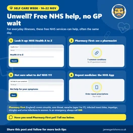
Unwell? Free NHS help, no GP wait
It’s Self Care Week. For everyday illnesses, these free NHS services can help without waiting for a GP appointment.

Limity sieci aplikacji
Wybierz aplikacje, które mogą korzystać z danych mobilnych, gdy jesteś poza domem. Instrukcja dla iPhone'a i Androida. Bezpłatna lokalna pomoc, Bridlington i Driffield.
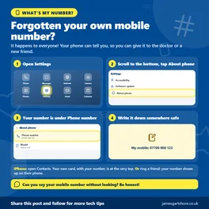
Jak znaleźć swój własny numer telefonu
Zapomniał(a) Pan/Pani swojego numeru telefonu? Oto jak znaleźć go w kilka kliknięć na telefonie z Androidem lub iPhone'ie. Bezpłatna lokalna pomoc, Bridlington i Driffield.

Niech telefon pomoże Panu/Pani jeździć bezpiecznie
Trwa Tydzień Bezpieczeństwa na Drogach, więc oto jak może Pan/Pani wykorzystać telefon, aby jeździć bezpieczniej.
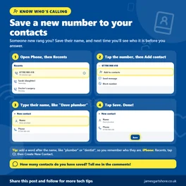
Zapisz nowy kontakt
Ktoś nowy do Pana/Pani dzwonił? Oto jak zapisać jego numer jako kontakt w telefonie z Androidem lub iPhone'ie. Bezpłatna lokalna pomoc, Bridlington i Driffield.

Połączenia przerywają wewnątrz budynków? Proszę używać połączeń przez Wi-Fi
Czy sygnał mobilny w Państwa domu znika wewnątrz budynków? Połączenia przez Wi-Fi pozwalają Państwa telefonowi na wykonywanie i odbieranie połączeń przez domowe Wi-Fi.

Światowy Dzień Cukrzycy
Dzisiaj jest Światowy Dzień Cukrzycy. Niezależnie od tego, czy chorujesz na cukrzycę, czy chcesz zmniejszyć ryzyko zachorowania, te bezpłatne narzędzia mogą pomóc.

Wspierasz Children in Need? Rób to bezpiecznie
BBC Children in Need będzie dziś w BBC One od godziny 19:00. Takie duże zbiórki czasem przyciągają fałszywe linki do wpłat, dlatego oto jak bezpiecznie przekazać darowiznę.

Latarka w telefonie
Włącz latarkę w telefonie w kilka sekund z górnej części ekranu, zarówno w Androidzie, jak i iPhone'ie. Bezpłatna lokalna pomoc, Bridlington & Driffield.

Światowy Dzień Dobroci
Dzisiaj przypada Światowy Dzień Dobroci. Odrobina życzliwości w świecie technologii może znaczyć wiele dla kogoś, kto ma trudności lub jest samotny.

Uprawnienia do lokalizacji
Niektóre aplikacje mogą widzieć, gdzie Pan/Pani jest, przez cały czas. Oto jak sprawdzić i ograniczyć dostęp do lokalizacji na iPhone'ie i Androidzie. Bezpłatna lokalna pomoc, Bridlington i Driffield.

SMS-y o płatnościach za paliwo zimowe
Wypłaty na opał zimowy zaczynają być wysyłane od połowy listopada, a wiadomości SMS o nich to znów oszustwo.

Mów zamiast pisać
Uciążliwa klawiatura? Dowiedz się, jak zamiast tego dyktować wiadomości, aby telefon wpisywał je za Ciebie. Bezpłatna lokalna pomoc, Bridlington i Driffield.

Przypomnij sobie krewnych, którzy służyli
Dzisiaj jest Dzień Rozejmu. Jeśli chcą Państwo dowiedzieć się więcej o krewnym, który zginął podczas pierwszej lub drugiej wojny światowej, istnieje bezpłatna strona internetowa, która może pomóc.

Czy potrzebują Państwo nowego telefonu
Czy sklep telefoniczny powiedział Państwu, że czas na wymianę na najnowszy model? Zanim wydadzą Państwo setki funtów, warto wiedzieć, że personel sklepu często...

Przypomnienie o lekach
Nigdy nie zapomnij o tabletach. Oto jak ustawić codzienne przypomnienie w aplikacji Zegar w Twoim telefonie. Bezpłatna lokalna pomoc, Bridlington i Driffield.

Zablokuj uciążliwego dzwoniącego
Czy ten sam numer dzwoni do Pana/Pani raz za razem? Oto jak go zablokować na Androidzie i iPhone'ie, aby telefon przestał dzwonić przy tym numerze.
Antywirus do telefonu
Nie muszą Państwo instalować aplikacji antywirusowej na iPhone'ie ani telefonie z systemem Android, ponieważ ochrona jest wbudowana. Oto dlaczego.
SMS-y od oszustów
Fałszywe SMS-y informują o nieopłaconym mandacie za parkowanie, zwrocie z HMRC lub płatności za paliwo. Oto jak je rozpoznać i co zrobić. Bezpłatna lokalna pomoc, Bridlington i Driffield.

Kolorowe kropki w iPhone
Czy zauważyli Państwo kiedyś małą kolorową kropkę lub kolorową bańkę za godziną na górze ekranu iPhone'a? To Twój iPhone mówi Ci, co...

Brak ładowarki w pudełku
Kupił(a) Pan/Pani nowy telefon lub laptop, czy planuje Pan/Pani zakup? Proszę sprawdzić pudełko, ponieważ niektóre nie mają już w zestawie ładowarki.
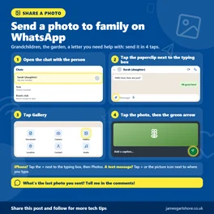
Wyślij zdjęcie na WhatsApp
Wyślij zdjęcie rodzinie na WhatsApp za pomocą kilku kliknięć, czy to wnuki, czy ogród. Krok po kroku. Bezpłatna lokalna pomoc, Bridlington & Driffield.

Abyśmy nie zapomnieli
Niedziela Pamięci przypada dzisiaj, 8 listopada, a Dzień Rozejmu przypada w środę, 11 listopada. W oba te dni o godzinie 11:00 odbywa się minuta ciszy.

Przenoszenie plików na nowy laptop
Kupili Państwo nowy laptop? Oto jak przenieść zdjęcia i dokumenty ze starego urządzenia za pomocą pamięci USB lub OneDrive.

Połączenie wideo WhatsApp
Połącz się wideo z rodziną na WhatsApp za pomocą kilku kliknięć, na iPhone'u lub Androidzie. Krok po kroku, prostym językiem. Bezpłatna lokalna pomoc, Bridlington & Driffield.

Zrób zrzut ekranu
Zrób zdjęcie tego, co widzisz na ekranie. Oto jak zrobić zrzut ekranu na Androidzie i iPhone'ie. Bezpłatna lokalna pomoc, Bridlington i Driffield.
E-maile od oszustów
Chciałem ostrzec przed oszukańczymi e-mailami, ponieważ jest ich obecnie bardzo dużo, a podszywają się one pod znane organizacje.

Czyszczenie starego laptopa
Pozbywasz się starego laptopa? Oto jak najpierw zapisać to, czego potrzebujesz, i wyczyścić go całkowicie, korzystając z ustawień Windows 11. Bezpłatna lokalna pomoc, Bridlington i Driffield.
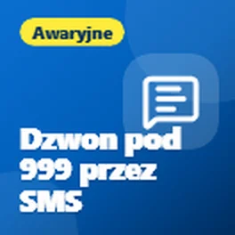
999 Dostęp dla osób niesłyszących
Chciałem podzielić się bezpłatnymi usługami, które pozwalają osobom głuchym, niedosłyszącym lub mającym trudności z mówieniem skontaktować się z 999 w nagłym wypadku. Wiele osób...

Zeskanuj dokument telefonem
Zeskanuj list lub formularz do formatu PDF za pomocą aplikacji Google Drive w swoim telefonie, a następnie wyślij go e-mailem lub udostępnij. Krok po kroku. Bezpłatna lokalna pomoc, Bridlington & Driffield.

Pomoc z laptopem w ramach Universal Credit
Często pytają mnie, czy można otrzymać darmowy laptop w ramach Universal Credit. Nie otrzymuje się laptopa automatycznie, ale są miejsca, które mogą pomóc...

Otwieraj pliki PDF na telefonie
Listy, formularze, bilety i rachunki często przychodzą jako pliki PDF. Oto jak je otworzyć i zapisać na telefonie z Androidem lub iPhone'em.
Sprawdzenie subskrypcji
Streaming, aplikacje i darmowe okresy próbne, które przeszły w płatne plany, mogą po cichu kosztować kilka funtów miesięcznie. Oto jak je sprawdzić.

Noc Ognisk (Bonfire Night)
Jutro Noc Ognisk! 🎆 Oto kilka sposobów, dzięki którym Państwa telefon może pomóc w bezpiecznym świętowaniu.
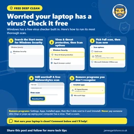
Sprawdź laptop pod kątem wirusów
Obawia się Pan/Pani, że laptop ma wirusa? Oto jak przeprowadzić pełne skanowanie za pomocą Windows Security oraz skanowanie offline, aby znaleźć ukryte zagrożenia.
Oszustwa na WhatsApp
Chciałem podzielić się ostrzeżeniem dotyczącym dwóch oszustw na WhatsApp, które są obecnie bardzo powszechne.

Darmowe aplikacje i darmowe okresy próbne
Wiele aplikacji twierdzi, że są „bezpłatne”, ale niektóre zarabiają w inny sposób: poprzez reklamy, płatne dodatki lub bezpłatne okresy próbne, które po cichu zmieniają się w opłaty tygodniowe lub miesięczne...
Oszustwa telefoniczne
Chciałem podzielić się sposobami na ograniczenie oszustw i telefonów od nieznajomych, ponieważ pojawia się nowy rodzaj takich połączeń, o którym warto wiedzieć.

Znajdź pliki i foldery w swoim telefonie
Pobrali Państwo formularz lub list i nie mogą go Państwo znaleźć? Oto jak znaleźć pliki i foldery w telefonie z systemem Android. Bezpłatna lokalna pomoc, Bridlington & Driffield.
Osobne konta
Chciałem podzielić się prostą poradą, która może znacząco wpłynąć na bezpieczeństwo komputera: używanie osobnych kont do różnych celów.

Telefon działa wolno
Czy Twój telefon z Androidem działa coraz wolniej? Oto proste kroki, które pomogą, oraz wyjaśnienie, dlaczego należy unikać aplikacji typu „cleaner” i „booster”. Bezpłatna lokalna pomoc, Bridlington i Driffield.
Oszustwa telefoniczne banków
Chciałem przekazać ostrzeżenie o jednym z najdroższych oszustw krążących obecnie: telefonach od osób podszywających się pod Państwa bank lub policję.
Światowy Dzień Oszczędzania
Wczoraj był Światowy Dzień Oszczędzania, więc chciałem podzielić się bezpłatnymi narzędziami, które mogą nieco ułatwić oszczędzanie, nawet gdy brakuje pieniędzy.

Usuwanie e-maili w telefonie
Skrzynka pełna starych wiadomości i newsletterów? Oto jak usunąć jedną wiadomość lub wiele naraz na telefonie oraz co oznacza Archiwizuj.
Halloween
Z okazji dzisiejszego Halloween chciałem podzielić się kilkoma sposobami, w jakie technologia może pomóc, niezależnie od tego, czy wyczekuje Pan/Pani dzieci zbierających słodycze, czy woli Pan/Pani spokój...
Tydzień kompetencji medialnych Dzień 8
To ostatni dzień Globalnego Tygodnia Kompetencji Medialnych i Informacyjnych, więc chciałem zakończyć zestawieniem bezpłatnych zasobów pomagających dzieciom i wnukom...
Tydzień kompetencji medialnych, dzień 7
To siódmy dzień Globalnego Tygodnia Kompetencji Medialnych i Informacyjnych, a dzisiejsze wskazówki dotyczą tego, jak odróżnić reklamy i fałszywe opinie od prawdziwych porad.
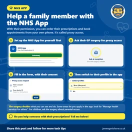
Aplikacja NHS dla opiekunów i rodzin
Czy pomaga Pan/Pani rodzicowi, partnerowi lub członkowi rodziny w dbaniu o ich zdrowie? Za ich zgodą może Pan/Pani zamawiać ich recepty i umawiać wizyty...
Dzień Sieciowych Kontaktów
Dzisiaj przypada Światowy Dzień Sieciowania Online, który polega na nawiązywaniu i utrzymywaniu kontaktów w sieci. Niezależnie od tego, czy chcą Państwo odzyskać kontakt ze starymi...

Młodzi ludzie w mediach społecznościowych
Jeśli mają Państwo dzieci lub wnuki w mediach społecznościowych, oto kilka prostych i bezpłatnych sposobów, aby pomóc im zachować większe bezpieczeństwo. Większość aplikacji społecznościowych jest przeznaczona dla osób w wieku...
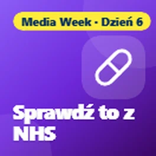
Tydzień kompetencji medialnych, dzień 6
To szósty dzień Global Media and Information Literacy Week, a dziś chciałem porozmawiać o informacjach zdrowotnych w sieci.
Światowy Dzień Udaru Mózgu
Dzisiaj jest Światowy Dzień Udaru, więc chciałem się podzielić informacjami, jak rozpoznać objawy udaru oraz jak Państwa telefon może pomóc w nagłym wypadku.
Nauka dla rodziny
W związku z feriami zimowymi oraz faktem, że październik jest miesiącem Festiwalu Uczenia się Rodzinnego, chciałem podzielić się bezpłatnymi aplikacjami i stronami internetowymi, z których mogą Państwo korzystać z...
Tydzień Edukacji Medialnej, dzień 5
To piąty dzień Tygodnia Globalnej Edukacji Medialnej i Informacyjnej, a dzisiejsze wskazówki dotyczą przesyłania wiadomości na WhatsApp oraz wiadomości łańcuszkowych.

Darmowa karta SIM National Databank
Czy wiedzą Państwo, że istnieje darmowy pakiet danych mobilnych dla osób, których na to nie stać? National Databank, prowadzony przez organizację charytatywną Good Things Foundation, oferuje...
Media Literacy Week Dzień 4
To czwarty dzień Global Media and Information Literacy Week, a dziś chciałem podzielić się niektórymi wbudowanymi narzędziami w Facebooku, które pozwalają Państwu przejąć większą kontrolę...

Co może oferować aplikacja NHS
Ma Pan/Pani dość dzwonienia do lekarza o 8 rano? Bezpłatna aplikacja NHS umieszcza wiele usług lekarza rodzinnego w Pana/Pani telefonie.
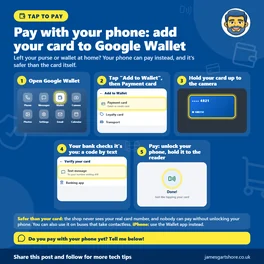
Dodawanie karty bankowej do Google Wallet
Płać telefonem zamiast kartą bankową. Oto jak dodać kartę do Google Wallet i dlaczego jest to bezpieczniejsze niż używanie samej karty.
Media Literacy Week Dzień 3
To trzeci dzień Global Media and Information Literacy Week, a dzisiejsza wskazówka dotyczy tego, skąd czerpią Państwo wiadomości.
Dzień Śledzenia Emerytur
Dzisiaj jest Narodowy Dzień Śledzenia Emerytur, więc chciałem podzielić się bezpłatnymi rządowymi narzędziami, które mogą pomóc Państwu odnaleźć wszelkie zagubione emerytury...
Get Online Week Dzień 7
To ostatni dzień Get Online Week, więc chciałem zakończyć dzieląc się informacją, gdzie można uzyskać bezpłatną pomoc technologiczną, ponieważ nie muszą Państwo radzić sobie z tym sami...
Dzień 2 Tygodnia Edukacji Medialnej
To drugi dzień Global Media and Information Literacy Week, a dziś chciałem podzielić się bezpłatnymi narzędziami do sprawdzania, czy zdjęcie jest prawdziwe, czy stworzone przez AI.

Bezpieczeństwo płatności kodem QR
Szybkie ostrzeżenie o kodach QR, czyli tych kwadratowych kodach kreskowych, które skanuje się aparatem w telefonie. Oszuści naklejają fałszywe kody na prawdziwe, zwłaszcza na parkingach...
Zmiana czasu na zimowy
Tylko krótkie przypomnienie, że dziś w nocy, o 2:00 nad ranem w niedzielę, przestawiamy zegarki o godzinę do tyłu. Oznacza to dodatkową godzinę w łóżku, ale także kilka zegarów do sprawdzenia.
Get Online Week Dzień 6
To szósty dzień Get Online Week, a dzisiejsze wskazówki dotyczą utrzymywania kontaktu z rodziną i przyjaciółmi.
Tydzień Kompetencji Medialnych Dzień 1
Dzisiaj rozpoczyna się Tydzień Globalnej Kompetencji Medialnej i Informacyjnej, który dotyczy umiejętności odróżniania prawdy od fałszu w sieci. Przy tak dużej liczbie...
Get Online Week Dzień 5
To piąty dzień Tygodnia Aktywnego Internetu, a dziś chciałem podzielić się pomocą dla każdego, kto nie ma w domu urządzenia ani internetu.
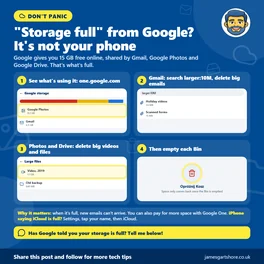
Przechowywanie Google pełne
Otrzymałeś komunikat, że pamięć Google jest pełna? Dowiedz się, co zajmuje miejsce i jak usunąć duże e-maile, aby móc odbierać nowe wiadomości.
Noś różowy
Dzisiaj przypada dzień Wear It Pink na rzecz Breast Cancer Now, więc chciałem podzielić się bezpłatnymi sposobami, dzięki którym Pana/Pani telefon może pomóc pamiętać o regularnym samobadaniu piersi.
Get Online Week Dzień 4
To czwarty dzień Get Online Week, a dzisiaj chciałem porozmawiać o hasłach, ponieważ prawie każdy ma z nimi problem.
Telefon wciąż jest bezpieczny
Telefony otrzymują bezpłatne aktualizacje bezpieczeństwa tylko przez określony czas. Dowiedz się, jak zainstalować oczekujące aktualizacje i sprawdzić, czy Twój telefon jest wciąż wspierany.
Dzień Świadomości na temat jąkania się
Dzisiaj przypada Międzynarodowy Dzień Świadomości Osoby Zastygającej w Mowie, więc chciałem podzielić się bezpłatną technologią, która może nieco ułatwić życie każdemu, kto ją ma.
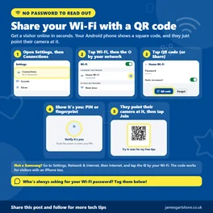
Udostępnianie Wi-Fi za pomocą kodu QR
Goście pytają o hasło do Wi-Fi? Oto jak udostępnić swoje Wi-Fi za pomocą kodu QR na Samsungu lub innym telefonie z Androidem.
Get Online Week Dzień 3
To trzeci dzień Get Online Week, a dzisiejsze wskazówki dotyczą bezpłatnych narzędzi, które pomogą Państwu zachować bezpieczeństwo przed oszustami.
Skradziony telefon
Chciałem podzielić się informacjami, co zrobić, jeśli Twój telefon zostanie zgubiony lub skradziony, oraz kilkoma rzeczami, które warto zrobić już teraz, na wszelki wypadek.

Ponowne otwarcie zamkniętej strony internetowej
Zamknęli Państwo przez pomyłkę ważną stronę internetową? Oto jak ją odzyskać, korzystając z historii w Chrome lub Samsung Internet. Bezpłatna lokalna pomoc, Bridlington & Driffield.
Zmiana sieci telefonicznej
Sprawdź swoją umowę i zmień sieć za pomocą SMS za darmo: wyślij INFO na 85075, a następnie PAC na 65075, aby zachować swój numer. Bezpłatna lokalna pomoc, Bridlington i Driffield.
Tydzień Braille'a Dzień 7
To ostatni dzień Narodowego Tygodnia Braille'a, więc chciałem zakończyć go przedstawieniem sposobów, dzięki którym technologia ułatwia naukę i korzystanie z Braille'a.
Get Online Week Dzień 2
To drugi dzień Get Online Week, a dziś chciałem podzielić się darmowymi miejscami, w których mogą Państwo uczyć się umiejętności online we własnym tempie.
E-booki z biblioteki
W związku z nadchodzącymi ciemnymi wieczorami, chciałem podzielić się czymś miłym, o czym wiele osób nie wie: mogą Państwo pożyczyć e-booki i audiobooki z...

Spraw, aby bateria wystarczyła na cały dzień
Proste sposoby na dłuższe działanie baterii w iPhone lub Android, od trybu oszczędzania energii po zaprzestanie ładowania do 100% każdej nocy.
Dzień 6 Tygodnia Braille'a
To szósty dzień Narodowego Tygodnia Braille'a, a dzisiejsze wskazówki dotyczą komputerów i laptopów.
Get Online Week
Ten tydzień to Get Online Week, ogólnokrajowa kampania mająca na celu pomoc większej liczbie osób w poczuciu pewności podczas korzystania z internetu. Bycie online stało się częścią codziennego życia,...
Oszustwo z klonowaniem głosu
Chciałem przekazać ostrzeżenie o oszustwie, które staje się coraz powszechniejsze: telefonach z użyciem skopiowanego głosu członka rodziny.
Tydzień Braille'a, dzień 5
To piąty dzień Narodowego Tygodnia Braille'a, a dzisiaj chciałem się podzielić informacją, jak mogą Państwo sterować telefonem, używając tylko głosu.
Dzień Dyspraksji, dzień 7
To ostatni dzień Tygodnia Świadomości Dyspraksji, i chciałem zakończyć dzieleniem się wsparciem dla dorosłych i studentów, ponieważ dyspraksja nie ustaje...

Przejście na system cyfrowy w telefonach stacjonarnych
Chciałem podzielić się czymś ważnym dla każdego, kto ma alarm osobisty, taki jak brelok lub alarm przeciwpadnięcia, który działa przez linię telefoniczną domową.
Tydzień Braille'a Dzień 4
Dziś jest czwarty dzień Tygodnia Braille'a, a dzisiejsze wskazówki dotyczą książek, radia i telewizji, którą możesz słuchać.
Obniż swoje rachunki
Dziś jest Międzynarodowy Dzień Zwalczania Ubóstwa, dlatego chciałem podzielić się swoimi darmowymi narzędziami, które mogą pomóc Ci obniżyć koszty szerokopasmowego internetu...
Dzień Dyspraksji Dzień 6
Dziś jest szósty dzień Tygodnia Świadomości Dyspraksji, a dzisiaj chcę podzielić się technologią, która pomaga w poruszaniu się.
Dzień 3 Tygodnia Braille'a
Dziś jest trzeci dzień Tygodnia Braille'a, a dzisiaj chcę podzielić się darmowymi sposobami, jak sprawić, że Twój telefon lub komputer będzie czytał rzeczy na głos dla Ciebie.
Dyspraxia Dzień 5
Dziś jest piąty dzień Tygodnia Świadomości Dyspraksji, a dzisiejsze wskazówki dotyczą wszystkiego, co związane z poruszaniem się.
Aplikacje z jedzeniem
Dziś jest Światowy Dzień Żywności, więc chciałem podzielić się darmowymi aplikacjami, które mogą pomóc Ci zaoszczędzić pieniądze na żywności i zapobiec marnowaniu dobrego jedzenia.
Restart a Heart
Dziś jest Dzień Restartu Serca, więc chciałem podzielić się darmowymi aplikacjami i stronami internetowymi, które mogą pomóc Ci nauczyć pierwszej pomocy przy zatrzymaniu krążenia i być gotowym pomóc, gdy ktoś zatrzyma się.
Tydzień Braille'a, dzień 2
Dziś jest drugi dzień Tygodnia Braille, a także Dzień Bezpieczeństwa dla Użytkowników Wózka, więc chciałem podzielić się darmowymi aplikacjami, które pomagają osobom z utratą wzroku...
Dyspraxia Day 4
Dziś jest czwarty dzień Tygodnia Świadomości Dyspraksji, a dzisiaj chcę podzielić się darmowymi narzędziami, które ułatwiają czytanie.
Fałszywe SMS-y o paczkach
Dostał(a) Pan/Pani SMS o tym, że przesyłka nie mogła zostać dostarczona i prosi o opłatę? Oto jak bezpiecznie to sprawdzić, korzystając z aplikacji kuriera.
Dzień Dyspraksji, dzień 3
Dziś jest trzeci dzień Tygodnia Świadomości Dyspraksji, a dzisiejsze wskazówki są dla każdego, kto ma trudności z pisaniem.
Funkcje ułatwiające widzenie w telefonie
Ten tydzień to Tydzień Braille, więc chciałem podzielić się darmowymi funkcjami na Twoim telefonie, które mogą zrobić dużą różnicę, jeśli Twoje wzrok nie jest taki...
Stary telefon lub laptop
Dziś jest Międzynarodowy Dzień Odpadów Elektronicznych, co jest dobrym przypomnieniem o wszystkich starych telefonach, tabletach i laptopach leżących w szufladach. Większość z nas ma...
Dzień 2 Dyspraksji
Dziś jest drugi dzień Tygodnia Świadomości Dyspraksji, a dzisiaj chciałem podzielić się darmowymi narzędziami, które pomagają w organizacji.
Telefon w nagłym wypadku
Dziś jest Międzynarodowy Dzień Redukcji Ryzyka Katastrof, więc chciałem podzielić się kilkoma funkcjami Twojego telefonu, które mogą naprawdę pomóc w nagłej sytuacji....
Dzień Artritysu
Dziś jest Światowy Dzień RZĄDZENIA STAWÓRKI, więc chciałem podzielić się kilkoma funkcjami Twojego telefonu i laptopa, które mogą uczynić życie o wiele łatwiejszym, jeśli masz bolące, sztywne lub...
Tydzień Dyspraksji
Ten tydzień to Tydzień Świadomości Dyspraksji, więc chciałem podzielić się sposobami, w jakie technologia może pomóc dzieciom z dyspraksją. Idea polega na używaniu technologii, aby pomóc im...
Dzień Zdrowia Psychicznego
Światowy Dzień Zdrowia Psychicznego przypadał na 10 października, więc chciałem podzielić się kilkoma prostymi rzeczami, które Twój telefon już potrafi zrobić, aby pomóc Ci poczuć się trochę spokojniejszym i bardziej...
Społeczności online
Ogrodnictwo, obserwacja ptaków, historia rodziny, piłka nożna: prawie na pewno istnieje dla tego społeczność online. Oto gdzie jej szukać.
Jak rozpoznać złą aplikację
Reklamy na ekranie głównym lub w innych aplikacjach? Możliwe, że zainstalowano złą aplikację. Dowiedz się, jak ją namierzyć w ustawieniach baterii.
Straszne wyskakujące reklamy
Chciałem podzielić się wskazówką dotyczącą tych strasznych reklam pop-up, które czasami pojawiają się na telefonach.
Aktualizacja nawigacji
Niezależne nawigacje satelitarne często nie aktualizują się tak, jak aplikacje map w telefonie. Oto oznaki, że Twoja nawigacja jest nieaktualna.
Wybrany do finału!
Chciałem podzielić się trochę wiadomości. Niedawno zostałem zakwalifikowany do nagrody Time2Volunteer Awards 2026 za wolontariat, który wykonuję z lokalnym wsparciem technicznym...
Bezpieczeństwo komputera
Chciałem podzielić się kilkoma wskazówkami dotyczącymi utrzymania komputera w bezpieczeństwie, ponieważ wiele osób kończy na płaceniu za antywirusy, których wcale nie potrzebuje.
Co to jest kod QR?
Chciałbym podzielić się szybką wskazówką dotyczącą kodów QR.

Programatory ogrzewania
Zbliżająca się zima to dobry moment, aby sprawdzić timery ogrzewania i ciepłej wody.
Sprawdzenie ogrzewania
Zbliżająca się zima to dobry moment, aby przetestować ogrzewanie, zwłaszcza jeśli nie było go używane w tym roku.
Przeglądaj wskazówki według tematu
- Scams and staying safe (20)
- Fake news and online info (8)
- Health and wellbeing (23)
- Money (7)
- Getting online and staying connected (11)
- Wiadomości (1)
- Everyday tech (78)
Co ludzie mówią
Bardzo dziękuję, proszę pana
Tak, zdecydowanie przydatne, dziękuję. Udostępnię każdemu, komu Twoje porady mogą się przydać 😃
Pomocne, dziękuję
Więcej o mnie i tych wskazówkach
Otrzymuj nowe porady e-mailem
Krótki e-mail, gdy opublikuję nową poradę. Za darmo, możesz zrezygnować w każdej chwili.
Dostaniesz e-mail z prośbą o potwierdzenie. Wiadomości wysyła follow.it, a każda zawiera link do wypisania się.